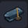
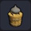
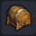
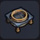
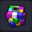

 |
모루 | 금속 등을 가공할 수 있는 작업대 ■ 각종 무기를 만들 수 있다 ※ 빌더 하트 50 교환 (잠금 해제) |
철괴 5 | 텅 빈 섬 작업대 |
| 모닥불 | 나뭇가지를 조립해 만든 밝고 따스한 조명 ■ 식재료를 넣으면 요리를 할 수 있다 |
목재 3 기름 3 |
나무 작업대 | |
| 요리용 모닥불 | 나무로 받침대를 만든 모닥불 ■ 식재료를 넣으면 요리를 할 수 있다 |
목재 6 모닥불 1 |
텅 빈 섬 작업대 | |
| 벽돌 키친 | 벽돌을 둘러 화력을 집중시킨 조리 기구 ■ 한 번에 3개의 식재료를 요리할 수 있다 |
모닥불 1 흙 3 철괴 2 목재 1 |
텅 빈 섬 작업대 | |
 |
염료통 | 뚜껑 위에 누름돌을 올려놓은 통 ■ 다양한 작물에서 염료를 추출할 수 있다 ※ 빌더 하트 50 교환 (잠금 해제) |
목재 10 실 2 석재 1 |
텅 빈 섬 작업대 |
 |
술통 | 음료를 담아 둘 때 쓰이는 나무 용기 ■ 야채와 과일을 주스로 만들 수 있다 |
목재 4 실 1 |
텅 빈 섬 작업대 |
| 재봉 작업대 | 천 등을 빠르게 꿰멜 때 쓰는 도구 ■ 옷이나 천으로 된 가구를 만들 수 있다 |
풀 실 6 목재 4 |
텅 빈 섬 작업대 | |
 |
파츠 체 | 구멍이 송송 뚫린 작업대 ■ 파츠 모양을 고정한다 ※ 빌더 하트 50 교환 (잠금 해제) |
철괴 6 풀 실 5 |
텅 빈 섬 작업대 |
| 염색 솥 | 염색용 액체가 들어 있는 가마 천이나 나무로 된 도구의 색을 바꿀 수 있다 |
흙 6 기름 1 |
텅 빈 섬 작업대 | |
| 금단의 연성대 | 금단의 연성을 하기 위한 장치 ■ 파괴신의 허물을 소재로 바꿀 수 있다 |
커다란 비늘 5 찢어발기는 발톱 1 뼈 1 |
텅 빈 섬 작업대 | |
| 신철로 | 금속을 녹일 수 있는 멋진 화로 ■ 금속 주괴를 만들 수 있다 |
화로 1 철괴 5 석탄 3 |
텅 빈 섬 작업대 | |
 |
도트 디코더 | 하얀 바위를 사용해 한 가지 색의 블록을 만드는 장치 ■ 단색 블록을 만들 수 있다 |
석재 8 | 텅 빈 섬 작업대 |
| 그루터기 작업대 | 평평해서 작업하기 편한 큼지막한 그루터기 ■ 부서진 아이템 등을 만들 수 있다 |
목재 5 | 텅 빈 섬 작업대 |